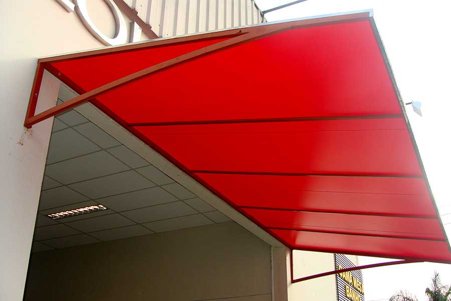
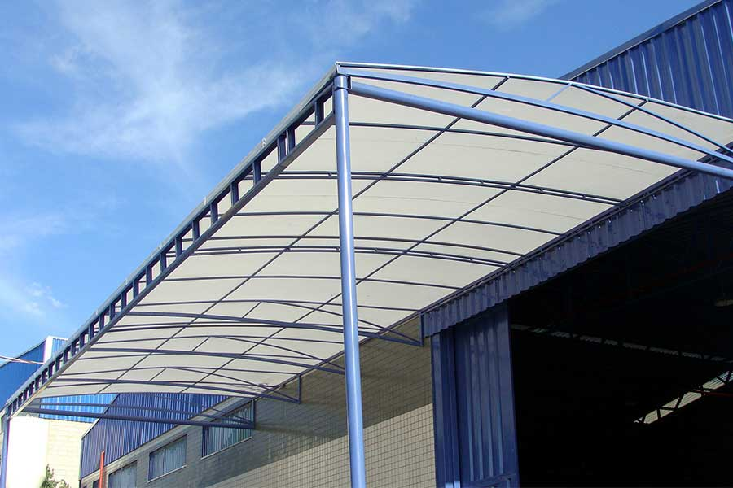
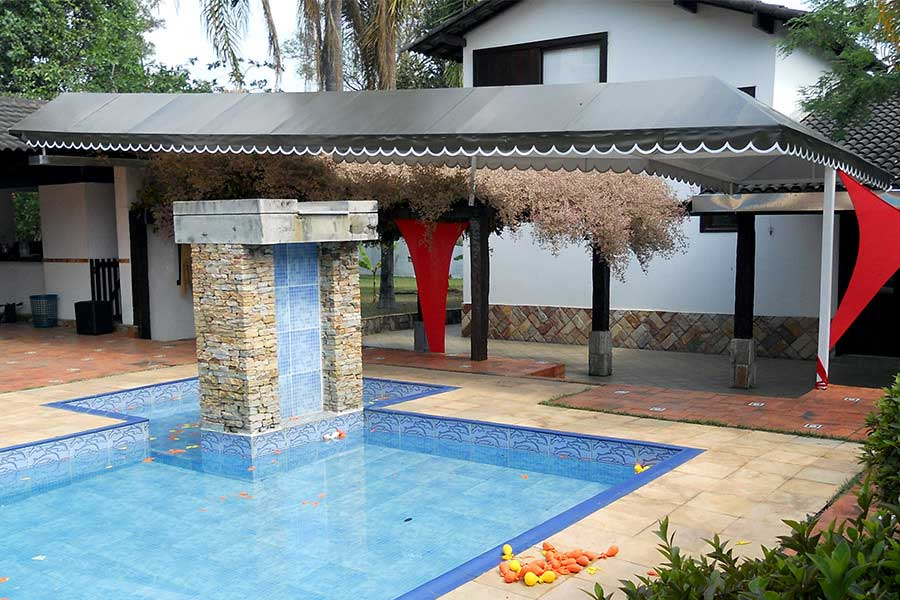
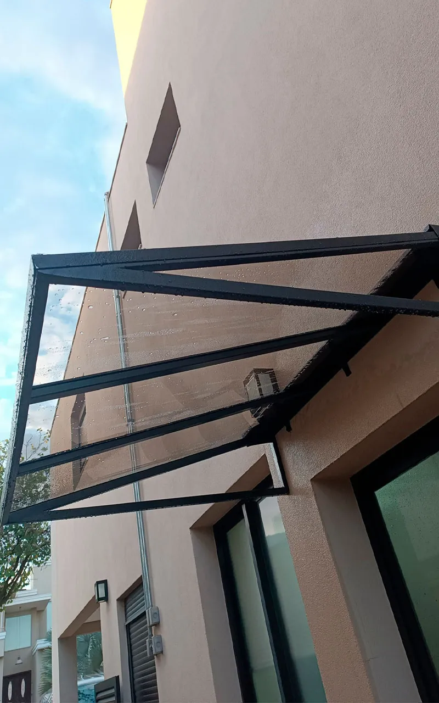
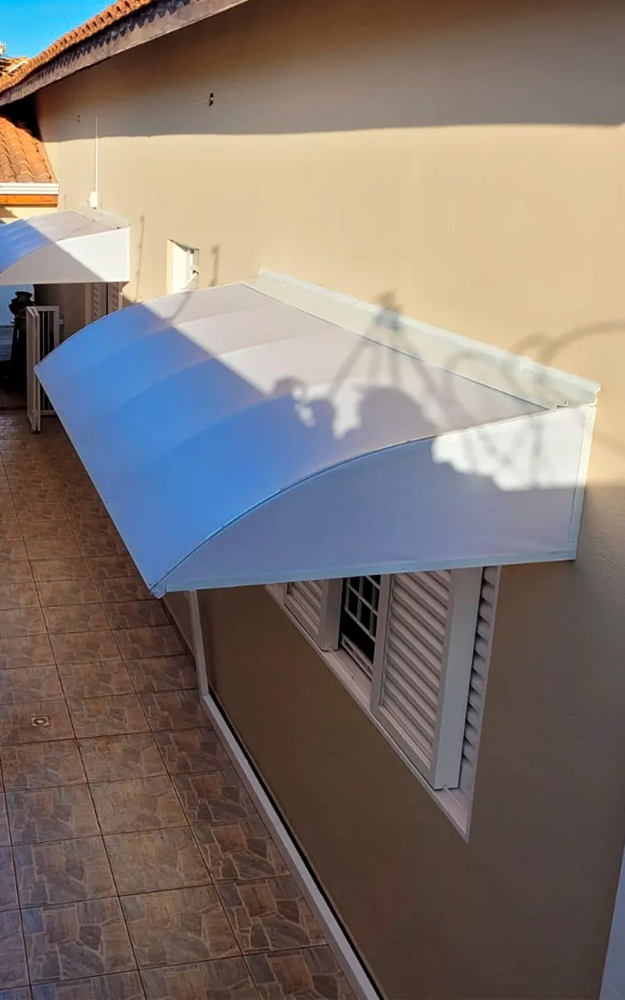
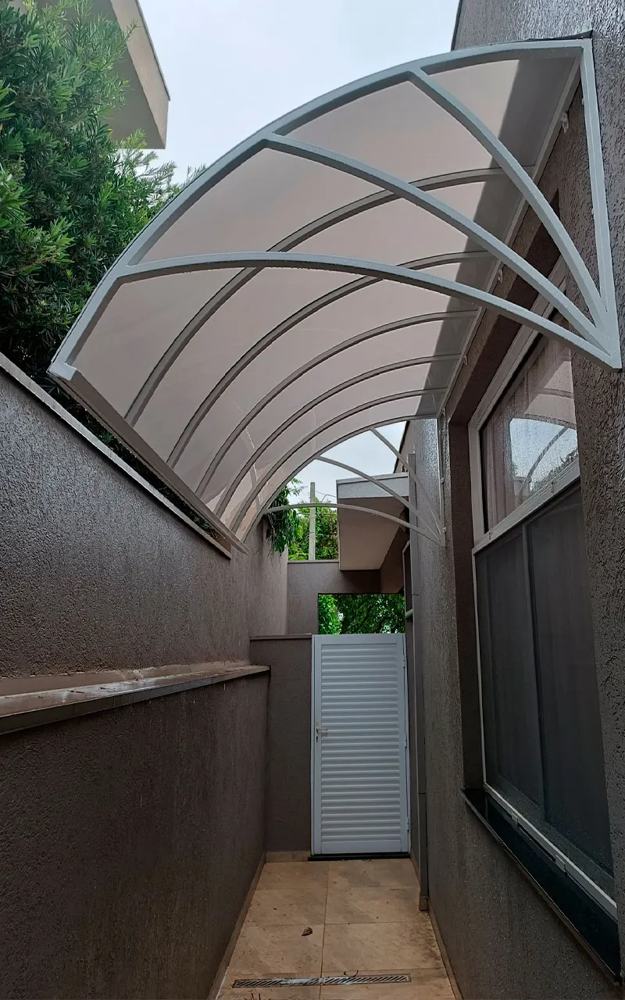
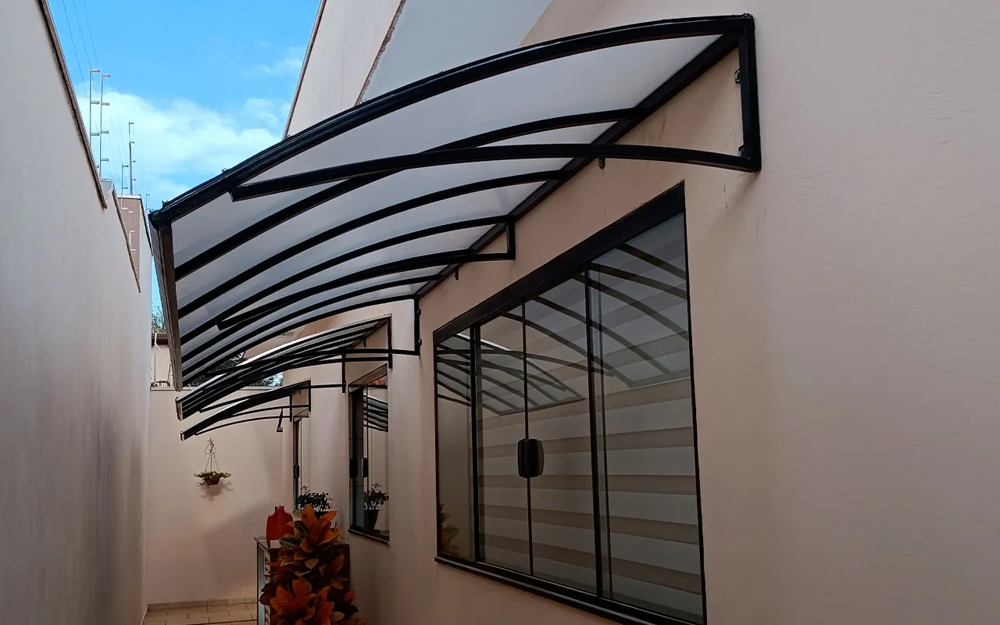
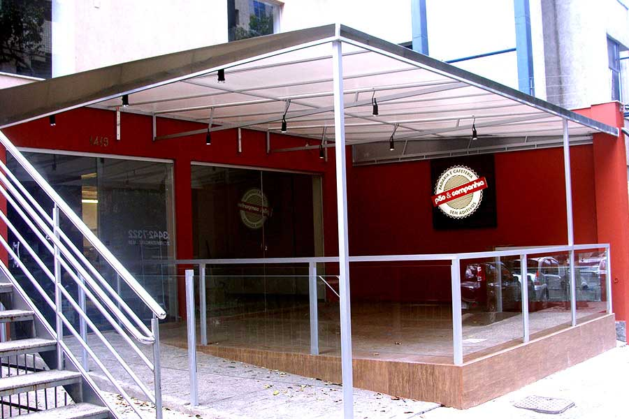
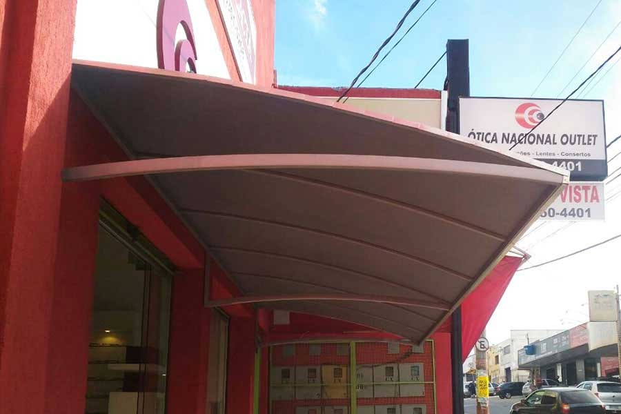
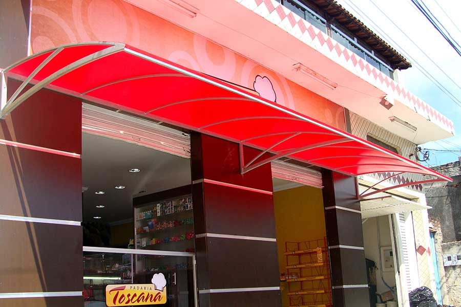

Toldo de policarbonato, retrátil, cortina e em lona. Para área de lazer, varanda, garagem, janela e fachada de loja. A gente mede no local, fabrica e instala.
Medição no local
sem custo
Fabricação
própria
Instalação com
equipe própria
Linhares e 30 km
de raio
Cada lugar pede uma solução. A gente vai até você, olha o espaço e indica o toldo que aguenta o sol e a chuva daqui.
Deixa a luz passar e segura a chuva. Transparente ou fosco, o que muita gente chama de toldo de acrílico. Para garagem, área de lazer, entrada de casa e corredor.
Lona na cor que você escolher, com ou sem a sua marca impressa. Para fachada de loja, comércio e casa.
Abre quando precisa de sombra e recolhe quando não precisa. De enrolar, de correr ou articulado, manual ou motorizado. Para varanda, área de lazer e teto retrátil de garagem.
Desce na vertical e fecha a lateral da varanda ou do comércio contra sol e chuva de lado.
Toldo fixo ou de enrolar, que protege a janela do sol forte e a porta da chuva.
Estrutura metálica com cobertura para área de lazer, garagem e quintal. A gente faz a estrutura e a cobertura.
Toldo antigo, rasgado ou desbotado. A gente troca a lona e aproveita a estrutura quando ela está boa.
Toldo de fachada com o nome da empresa. Faz sombra na vitrine e ainda deixa a loja mais fácil de ver da rua.
Imagens ilustrativas dos modelos. A medida, a cor da lona e a estrutura são feitas sob medida pro seu espaço.










Toldo comprado por foto chega sem encaixar. Vamos até o local, medimos e só depois passamos o orçamento.
Estrutura, lona e cobertura feitas por nós, aqui em Linhares. Você fala com quem produz.
Quem fabrica é quem instala. Se precisar de ajuste depois, você sabe a quem ligar.
Depende da medida, do material (lona ou policarbonato), do tipo (fixo, retrátil, motorizado) e da estrutura. Por isso a gente vai até o local, mede e passa o orçamento fechado, com material, medida e instalação já inclusos. A medição e o orçamento não custam nada.
O policarbonato deixa a luz passar e segura a chuva: é o mais pedido pra garagem, área de lazer e entrada de casa. A lona faz sombra de verdade, vem na cor que você quiser e pode levar a sua marca: é o mais usado em fachada de loja e comércio. Na medição a gente olha o lugar e indica o que funciona melhor.
Sim. Fazemos toldo retrátil, articulado, de enrolar e cortina, manual ou motorizado.
Sim. Se a estrutura do seu toldo ainda está boa, a gente troca só a lona rasgada ou desbotada, e você economiza.
Sim. Fazemos a estrutura metálica, o pergolado e a cobertura, pra área de lazer, garagem, varanda e quintal.
Atendemos Linhares e região, num raio de até 30 km. Manda a sua localização no WhatsApp que a gente confirma.
O orçamento sai fechado. Você sabe o que está comprando antes de decidir.
Escrito no orçamento: lona ou policarbonato, cor, espessura e tipo de estrutura.
Tirada no local por nós, não estimada por foto. É o que garante o encaixe.
Montagem inclusa no valor. Não é preço de material com a mão de obra cobrada por fora.
Manda uma foto do lugar no WhatsApp. A gente agenda a medição e volta com o orçamento fechado, sem custo nenhum.
Pedir Orçamento no WhatsApp